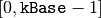
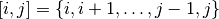

In this section, we code the model developed in The problem and a first model.
You can find the code in the file tutorial/chap2/cp_is_fun1.cc.
We quickly scan through the code and describe the basic constituents needed to solve the cryptarithmetic puzzle in C++. In the next chapters, we will cover some of them in more details.
To use the library, we need to include a few headers:
#include "base/logging.h"
#include "constraint_solver/constraint_solver.h"
The header logging.h is needed for some logging facilities and some assert-like macros. The header constraint_solver.h is the main entry point to the CP solver and must be included whenever you intend to use it.
The whole library is nested in the namespace operations_research. We follow the same convention in all our examples and code inside this namespace:
namespace operations_research {
IntVar* const MakeBaseLine2(...) {
...
}
...
void CPIsFun() {
// Magic happens here!
}
} // namespace operations_research
MakeBaseLine2, MakeBaseLine3 and MakeBaseLine4 are helper functions to create the model.
We detail these functions later in Constraints but for the moment, let’s concentrate on CPIsFun() where all the magic happens.
It is called from the main[1] function:
int main(int argc, char **argv) {
operations_research::CPIsFun();
return 0;
}
| [1] | The main function does not lie inside the namespace operations_research, hence the use of the operations_research identifier to call the function CPIsFun(). |
The CP solver is the main engine to solve an instance. It is also responsible for the creation of the model. It has a very rich Application Programming Interface (API) and provides a lots of functionalities.
The CP solver is created as follows:
Solver solver("CP is fun!");
The only argument of the constructor is an identification string.
The Solver class has one additional constructor covered in Parameters.
To create the model, we first need to create the decision variables:
const int64 kBase = 10;
IntVar* const c = solver.MakeIntVar(1, kBase - 1, "C");
IntVar* const p = solver.MakeIntVar(0, kBase - 1, "P");
...
IntVar* const e = solver.MakeIntVar(0, kBase - 1, "E");
For each letter, we create an integer variable IntVar whose domain is  except for the variables c, i, f and t that cannot take the value 0. The MakeIntVar(i, j, name) method is a factory method that creates an integer variable whose domain is  and has a name name. It returns a pointer to an IntVar. The declaration IntVar* const c may seem a little be complicated at first. It is easier to understand if read from right to left: c is a constant pointer to an IntVar. We can modify the object pointed by c but this pointer, because it is constant, always refers to the same object.
Factory methods in or-tools
The solver API provides numerous factory methods to create different objects. These methods start with Make and return a pointer to the newly created object.
The solver automatically takes ownership of these objects and deletes them appropriately.
Warning
Never delete explicitly an object created by a factory method!
Beside integer variables, the solver provides factory methods to create interval variables (IntervalVar), sequence variables (SequenceVar) and variables to encapsulate objectives (OptimizeVar).
It is always a good idea to program defensively. We use several assert-like macros defined in the header logging.h to assert some expressions. We know that the base has to be at greater than or equal to 10:
// Check if we have enough digits
CHECK_GE(kBase, letters.size());
CHECK_GE(x,y) is a macro that checks if condition (x) >= (y) is true. If not, the program is aborted and the cause is printed:
[23:51:34] examples/cp_is_fun1.cc:108: Check failed: (kBase) >= (letters.size())
Aborted
In Asserting, we cover assert-like macros in more details.
To create a integer linear constraint, we need to know how to multiply an integer variable with an integer constant and how to add two integer variables. We have seen that the solver creates a variable and only provides a pointer to that variable. The solver provides also factory methods to multiply an integer coefficient by an IntVar given by a pointer:
IntVar* const var1 = solver.MakeIntVar(0, 1, "Var1");
IntVar* const var2 = solver.MakeProd(var1,36)->Var();
Note how the method Var() is called to cast the result of MakeProd() into a pointer to IntVar. Indeed, MakeProd() returns a pointer to an IntExpr. The class IntExpr is a base class to represent any integer expressions.
Note also the order of the arguments MakeProd() takes: first the pointer to an IntVar and then the integer constant.
To add two IntVar given by their respective pointers, the solver provides again a factory method:
IntVar* const var3 = solver.MakeSum(var1,var2)->Var();
Is the call to Var() really necessary?
Yes! Var() not only transforms a constraint into a variable but also a stateless expression into a stateful and monotonic variable.
Variables are stateful objects that provide a rich API. On the other hand, subclasses of BaseIntExpr represent range-only stateless objects. That is, MakeMin(MakeSum(A,B),a) is recomputed each time as MakeMin(A,a) + MakeMin(B,a). Furthermore, sometimes the propagation on an expression is not complete. For instance, if A is an IntVar with domain [0 .. 5], and B another IntVar with domain [0 .. 5] then MakeSum(A, B) has domain [0, 10]. If we apply MakeMax(MakeSum(A, B), 4)) then we will deduce that both A and B will have domain [0 .. 4]. In that case, the max of MakeMax(MakeSum(A, B),4) is 8 and not 4. To get back monotonicity, we need to cast the expression into a variable using the Var() method: MakeMax(MakeSum(A, B),4)->Var(). The resulting variable is stateful and monotonic.
Warning
Never store a pointer to an IntExpr nor a BaseIntExpr in the code. The safe code should always call Var() on an expression built by the solver, and store the object as an IntVar*.
To construct a sum, we use a combination of MakeSum() and MakeProd() factory methods:
const int64 kBase = 10;
IntVar* const c = solver.MakeInt(1, kBase - 1, "C");
IntVar* const p = ...;
...
IntVar* const s = ...;
IntVar* const term1 = solver.MakeSum(solver.MakeProd(c,kBase),p)->Var();
IntVar* const term2 = solver.MakeSum(solver.MakeProd(i,kBase),s)->Var();
No need to cast the result of MakeProd(c,kBbase) into an IntVar because MakeSum() takes two pointers to an IntExpr.
The combination of MakeSum() and MakeProd() can quickly become tedious. We use helper functions to construct sums. For example, to construct the first term of our cryptarithmetic puzzle "kBase c + p", we call MakeBaseLine2():
IntVar* const term1 = MakeBaseLine2(&solver, c, p, kBase);
The function MakeBaseLine2() is defined as follow:
IntVar* const MakeBaseLine2(Solver* s,
IntVar* const v1,
IntVar* const v2,
const int64 base) {
return s->MakeSum(s->MakeProd(v1, base), v2)->Var();
}
If the number of terms in the sum to construct is large, you can use MakeScalProd(). This factory method accepts an std::vector of pointers to IntVars and an std::vector of integer coefficients:
IntVar* const var1 = solver.MakeInt(...);
...
IntVar* const varN = solver.MakeInt(...);
std::vector<IntVar*> variables;
variables.push_back(var1);
...
variables.push_back(varN);
std::vector<int64> coefficients(N);
// fill vector with coefficients
...
IntVar* const sum = solver.MakeScalProd(variables, coefficients)->Var();
In the code, we use MakeScalProd() in the helper functions MakeBaseLine3() and MakeBaseLine4().
To create the sum constraint, we use the factory method MakeEquality() that returns a pointer to a Constraint object:
IntVar* const term1 = ...
IntVar* const term2 = ...
IntVar* const term3 = ...
IntVar* const sum_terms = solver.MakeSum(solver.MakeSum(term1,
term2),
term3)->Var();
IntVar* const sum = ...
Constraint* const sum_constraint = solver.MakeEquality(sum_terms, sum);
Finally, to add a constraint, we use the method AddConstraint():
solver.AddConstraint(sum_constraint);
In the code, we immediately add the constraint:
solver.AddConstraint(solver.MakeEquality(sum_terms, sum));
Adding the global AllDifferent constraint is a little bit easier because the solver provides a factory method MakeAllDifferent(). This methods accepts an std::vector of IntVar*:
std::vector<IntVar*> letters;
letters.push_back(c);
letters.push_back(p);
...
letters.push_back(e);
solver.AddConstraint(solver.MakeAllDifferent(letters));
A DecisionBuilder is responsible for creating the actual search tree, i.e. it is responsible for the search. The solver provides a factory method MakePhase() that returns a pointer to the newly created DecisionBuilder object:
DecisionBuilder* const db = solver.MakePhase(letters,
Solver::CHOOSE_FIRST_UNBOUND,
Solver::ASSIGN_MIN_VALUE);
The first parameter of the method MakePhase is an std::vector with pointers to the IntVar decision variables. The second parameter specifies how to choose the next IntVar variable to be selected in the search. Here we choose the first unbounded variable. The third parameter indicates what value to assign to the selected IntVar. The solver will assign the smallest available value.
To prepare for a new search:
DecisionBuilder* const db = ...
solver.NewSearch(db);
To actually search for the next solution in the search tree, we call the method NextSolution(). It returns true if a solution was found and false otherwise:
if (solver.NextSolution()) {
// Do something with the current solution
} else {
// The search is finished
}
We print out the found solution and check if it is valid:
if (solver.NextSolution()) {
LOG(INFO) << "Solution found:";
LOG(INFO) << "C=" << c->Value() << " " << "P=" << p->Value() << " "
<< "I=" << i->Value() << " " << "S=" << s->Value() << " "
<< "F=" << f->Value() << " " << "U=" << u->Value() << " "
<< "N=" << n->Value() << " " << "T=" << t->Value() << " "
<< "R=" << r->Value() << " " << "E=" << e->Value();
...
} else {
LOG(INFO) << "Cannot solve problem.";
} // if (solver.NextSolution())
The output is:
$[23:51:34] examples/cp_is_fun1.cc:132: Solution found:
$[23:51:34] examples/cp_is_fun1.cc:133: C=2 P=3 I=7 S=4 F=9 U=6 N=8 T=1 R=0 E=5
To obtain all the solutions, NextSolution() can be called repeatedly:
while (solver.NextSolution()) {
// Do something with the current solution
} else {
// The search is finished
}
To finish the search, invoke:
solver.EndSearch();